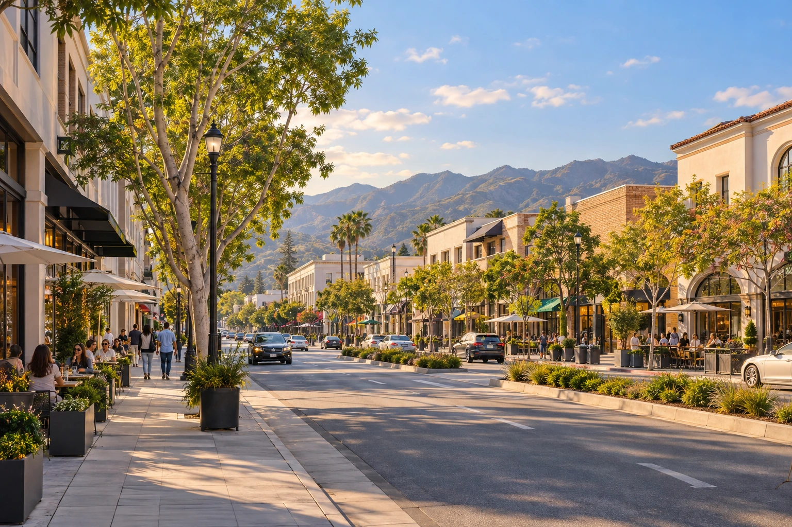

WEBSITE DESIGN, SEO + AEO
BURBANK
Get more customers with website design and ongoing SEO + AEO management. In-person meetings available by appointment only.
Burbank’s Studio Economy and Commercial Districts
Burbank’s business market combines a major media and production cluster with shopping, dining and neighborhood commerce. Its Media District and Downtown represent distinct parts of that economy, with different reasons for buyers to spend money.
The City’s economic development materials identify studios and entertainment companies in the Media District, including Disney, Warner Bros., iHeartMedia and PBS SoCal. Alongside those employers, the district includes restaurants, hotels and other commercial businesses.
This puts production activity and everyday commerce alongside one another. Some companies sell to entertainment businesses, while others welcome residents, employees and visitors.
Production Work Creates a Different Buying Situation
A business selling to a production buyer can be considered for a specific project, schedule or company account. That is different from a person choosing somewhere to eat or arranging a personal appointment. Both types of purchase can occur in the Media District, but they are not interchangeable.
Catering provides a straightforward example. A company accepting crew meal orders and private celebrations has two buying situations, even if the kitchen is the same. A production coordinator is arranging a work order, while a family is planning a personal event.
Businesses taking production orders can work around a project’s schedule. Businesses accepting personal bookings can work around a celebration or an individual appointment. A caterer accepting both handles different orders from the same kitchen.
Downtown Purchases and Visits
Burbank’s economic development office describes Downtown as a mixed use area with shops, restaurants, outdoor dining and a pedestrian setting. It lists shopping and entertainment destinations such as Burbank Town Center and movie theaters.
That creates a different business setting from a studio supplier’s project market. Someone planning dinner or a shopping trip is considering an individual visit. A company selling an ongoing service to a business is considering an account that can last beyond a single transaction.
For a Downtown owner, online attention becomes commercially useful when it contributes to purchases, reservations or visits. For a supplier selling project work, the meaningful result may instead be a conversation that becomes an order. The purchase can be a single visit or an ongoing business relationship.
More Reservations and Project Orders
A dinner reservation and a crew catering order can both begin with someone comparing businesses online. The restaurant wants another table booked, while the caterer wants another order. SEO helps a Burbank business appear in relevant unpaid Google results before the buyer chooses whom to contact.
Our website design and ongoing SEO + AEO management focus on bringing you more paying customers. For businesses taking project work, that can mean more booked orders. For businesses welcoming individual visitors, it can mean more purchases and reservations.
Sources
- Burbank Economic Development, Media District, Media employers and commercial setting
- Burbank Economic Development, Downtown, Shopping, dining and entertainment district
Meet by Appointment
In-person meetings in Burbank are available by appointment only. Call (818) 934-0444 to arrange a meeting, or open our chat below.
Can we meet in person in Burbank?
Yes, in-person meetings in Burbank are available by appointment only. Call StartWeb7 or use Get More Customers to arrange a time and confirm the meeting location.